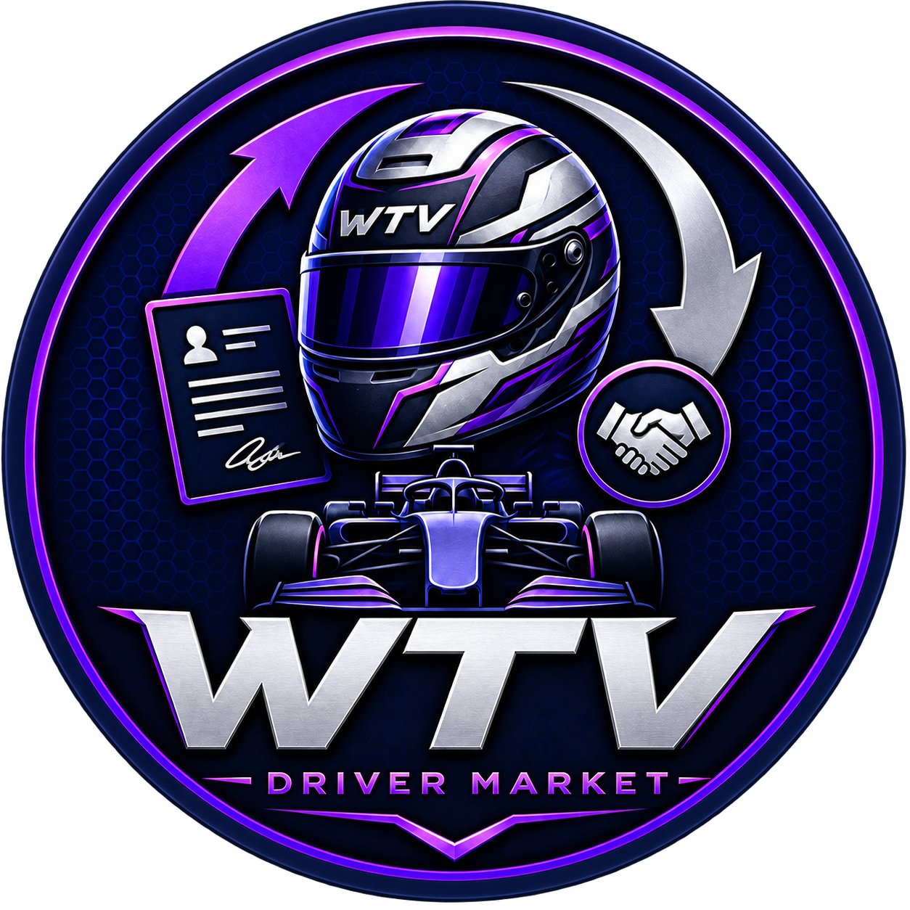

WTV Driver Market
Fahrermarkt & Liga-VerwaltungFahrer, Teams, Verträge, Marktwerte, Transfers, Historie und Saisonfunktionen direkt über Discord.
Die gemeinsame Website für unsere Discord-Bots. Hier findest du den offiziellen WTV Driver Market und WTV Prediction inklusive Funktionen, Commands, Versionen und Discord-Installationslinks.
Oben schnell installieren – weiter unten alle Details, Command-Listen und Versionsinfos.
Fahrer, Teams, Verträge, Marktwerte, Transfers, Historie und Saisonfunktionen direkt über Discord.

Pole, Podium, Fastest Lap, DNF, Safety Car, Sprint, Bonusfragen, Erinnerungen und Gesamtwertung.
Der WTV Driver Market bündelt Fahrer-, Team-, Vertrags- und Transferverwaltung in Slash Commands. Teamrollen können automatisch erkannt und bei Transfers angepasst werden; Fahrer ohne bekannte Teamrolle können als Free Agents behandelt werden.

V2.3 ist die stabile Driver-Market-Version. Commands und Funktionen, die erst für V3 geplant sind, sind unten klar markiert, damit man sofort erkennt, was offiziell schon existiert – und was noch nicht.
/adddriver, /editdriver und /transferdriver funktionieren ohne zusätzliches Popup-Fenster.
Marktwert, Gehalt und Klauseln werden sauber als Millionen-Euro-Werte dargestellt.
Railway-Volume und Backups schützen Fahrer-, Vertrags- und Transferdaten bei Updates.
Eine Rolle wie Transferleitung kann Verwaltungs-Commands freigeben, ohne breite Serverrechte zu brauchen.
Vertragsdaten, Boni und verschiedene Klauselarten lassen sich strukturiert speichern.
Rot, Grün und Weiß aus eurem WTV-Serverprofilbild bilden die Hauptfarben des Bots und dieser Website.
Der Bot ist für den WTV-Server gedacht und läuft 24/7 über Railway. Für Teamrollen und automatische Wechsel müssen die Discord-Rollen stimmen.
Über den Installationsbutton den gewünschten Discord-Server auswählen.
Nachrichten, Embeds und für Teamwechsel auch „Rollen verwalten“ erlauben.
Die Teamrollen im Server müssen mit der Bot-Konfiguration zusammenpassen.
Fahrer, Rollen und Transfers zuerst in einem privaten Kanal ausprobieren.
Hier siehst du direkt, welche Commands in der offiziellen V2.3 verfügbar sind und welche erst für V3 geplant sind.
/drivermarketTeams, Fahrer, Marktwerte und Vertragsinfos anzeigen/alldriversalle Fahrer kompakt auflisten/driverinfoDetails zu einem Fahrer anzeigen/topmarketvaluewertvollste Fahrer / Marktwert-Rangliste/driverhistoryHistorie eines Fahrers anzeigen/transfersletzte Transfers öffentlich anzeigen/adddriverFahrer hinzufügen/editdriverFahrer- und Vertragsdaten bearbeiten/transferdriverFahrer transferieren und Teamrolle anpassen/removedriverFahrer entfernen/helpHilfe / Übersicht/saisonSaison-Übersicht/datastatusDatenbank-/Speicherstatus anzeigen/auditlogVerwaltungsänderungen nachvollziehen/seasonstatusSaisonstatus prüfen/versionaktuelle Bot-Version anzeigen/renewcontractVertrag gezielt verlängern/setmarketvalueMarktwert direkt setzen/newseasonneue Saison mit Bestätigung starten/undoseasonletzten Saisonwechsel rückgängig machenVon der ersten Idee bis zur stabilen V2.3 und der separaten V3-Entwicklung.
Grundidee mit Fahrermarkt, Fahrer hinzufügen/entfernen und einfacher Speicherung.
Erweiterung um /alldrivers, /driverinfo, /editdriver und /transferdriver.
Stabilisierung der V2-Reihe und weiterer Ausbau der Liga-Nutzung.
Erweiterte stabile Version mit Hilfe/Saison-Übersicht und verbessertem Rechte-System.
Aktuelle Hauptversion. Direkte Eingabe, bessere Datensicherheit, Audit-/Saisonstatus und WTV Rot–Grün–Weiß-Design.
Zusätzliche Marktwert-, Vertrags-, Transfer-, Historien- und Saisonfunktionen werden getrennt entwickelt und getestet.
Nein. Der Bot läuft 24/7 über Railway.
Nein. Derselbe Discord-Bot läuft nach einem neuen Deployment mit dem aktualisierten Code weiter.
Nur wenn er Teamrollen automatisch ändern soll – z. B. bei Transfers.
Nein. Diese können auf Admins oder eine spezielle Rolle wie „Transferleitung“ begrenzt werden.
Der Fahrer kann als Free Agent bzw. freier Fahrer behandelt werden.
WTV Prediction ist euer Tipp-Bot für Race Weekends. Servermitglieder werden direkt als auswählbare Fahrer verwendet. Dazu kommen Fastest Lap, DNF, Safety Car, Bonusfragen, optionale Sprint-Tipps, ein Leaderboard und ein Saison-Reset für den Neustart bei 0 Punkten.
Die aktuelle Website-Reihe wird bewusst als V1 geführt.
Pole, P1, P2 und P3 direkt über Discord-Mitglieder auswählen.
Zusätzlich den Fahrer mit der schnellsten Rennrunde tippen.
Optional einen DNF-Fahrer tippen; leer lassen bedeutet „Kein DNF“.
Ja/Nein-Tipp für mindestens ein Safety Car.
Beim Erstellen der Runde Sprint Ja/Nein wählen; Sprint-Tipps nur bei Sprint-Wochenenden nötig.
Zwei-Antwort-Bonusfragen mit frei definierbaren Punkten.
Deadline freiwillig. Mit Deadline gibt es Erinnerungen und automatische Schließung.
Gesamtwertung und History über alle ausgewerteten Runden.
Alle Prediction-Daten nach Saisonende löschen und wieder bei 0 starten.
Mit /newprediction Grand Prix, Sprint Ja/Nein und optional eine Deadline setzen.
Mit /predict Discord-Mitglieder als Fahrer auswählen und den Tipp speichern.
Nach dem Rennen trägt die Predictionleitung das echte Ergebnis ein.
Der Bot rechnet alles aus und aktualisiert automatisch die Gesamtwertung.
/closeprediction oder /setpredictionresult verwendet wird.Die Command-Karten haben wie gewünscht einen Hover-Effekt.
/predictPrediction abgeben oder ändern/bonuspredictBonusfrage beantworten/mypredictioneigenen Tipp ansehen/predictioninfoaktuelle Runde anzeigen/predictionstandingsGesamtwertung anzeigen/predictionhistoryvergangene Runden anzeigen/bonusquestionsBonusfragen anzeigen/predictionhelpHilfe anzeigen/newpredictionneue Runde erstellen/addbonusquestionBonusfrage hinzufügen/setbonusanswerBonusfrage auswerten/closepredictionRunde manuell schließen/setpredictionresultErgebnis eintragen und auswerten/allpredictionsalle Tipps ansehen/deletepredictionroundaktuelle Test-/Fehlerrunde löschen/resetpredictionseasonSaison-Daten löschen und wieder bei 0 startenErste offizielle Website-Version mit direkter Mitglieder-Auswahl, optionaler Deadline, Sprint, Bonusfragen, Leaderboard und Saison-Reset.
Ganz oben und hier unten findest du die offiziellen Installationsbuttons noch einmal gesammelt.
Für Fahrer, Marktwerte, Verträge, Transfers, Rollen und Saisonverwaltung.
Für Renn-Tipps, Bonusfragen, Leaderboard, Erinnerungen und Saisonwertung.